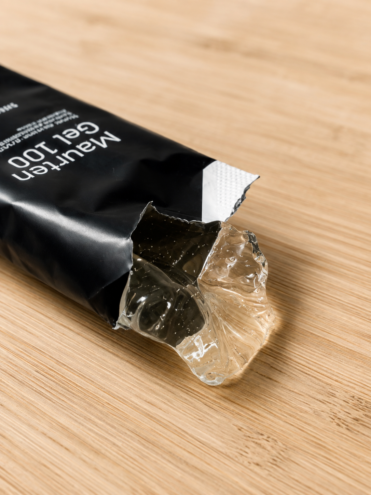

Every runner has a gel they're chasing: something that delivers carbs (and sometimes caffeine) without turning the last few miles into a negotiation with your own stomach. I've cycled through a handful of brands over the years, and while most of them get the job done, more than one has left me doing quick math on where the next bathroom might be. Maurten kept coming up in run club conversations as the gel people trust when the stomach stakes are high, so I finally picked up a Gel 100 Mix Box to put it to the test.
What's in the Box
The Mix Box comes with four Gel 100 packets and two Gel 100 Caf 100 packets, the caffeinated version with 100mg per serving. Ingredients are about as short as a gel label gets: water, glucose, fructose, sodium alginate, gluconic acid, calcium carbonate, and caffeine in the Caf version. Nothing exotic, nothing that reads like a chemistry set.
Texture and Taste
This is where Maurten breaks from everything else I've used. It isn't syrupy or gooey like a typical gel — it's closer to a soft, clear jelly. You can genuinely turn the packet upside down and it barely moves. And the taste is almost nonexistent. Not bad, not sweet, just... there.

That texture is exactly why it took me so long to try one in the first place. I'd seen reviews online comparing the consistency to snot, and that was enough to keep it off my list for a while. Having actually used it now, I think those reviews did it dirty. It doesn't taste or feel like anything except jelly. If you've ever eaten a spoonful of plain gelatin, that's the closest comparison I can give you.
Is It Messy?
Every runner carrying gels has had this thought mid-stride: rip this open and squeeze, and is it going to shoot everywhere or dribble down my hand? With Maurten, the answer is no. The thicker, jelly-like consistency means it stays put in the packet until you actually work it out, so there's no mystery squirt to worry about and no sticky mess on your hands or gear.
How My Stomach Handled It
This was the real test. On long runs I've had gels that sit heavy or hit me with that syrupy-sweet gut-bomb feeling around mile 10. Maurten never did that. Zero stomach issues across every long run I used it on, and it delivered the carbs (and the caffeine, when I reached for a Caf 100) exactly when I needed them.
Bottom Line
If you're a runner who's been burned by gels that upset your stomach or leave a lingering sugary taste, Maurten Gel 100 is worth the switch. It's nearly flavorless, easy to control, and simply works. Don't let the "tastes like snot" reviews scare you off — it just tastes like jelly, and your stomach will thank you on mile 20.